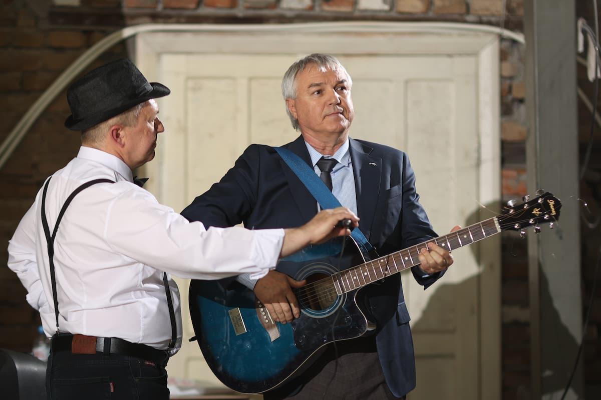
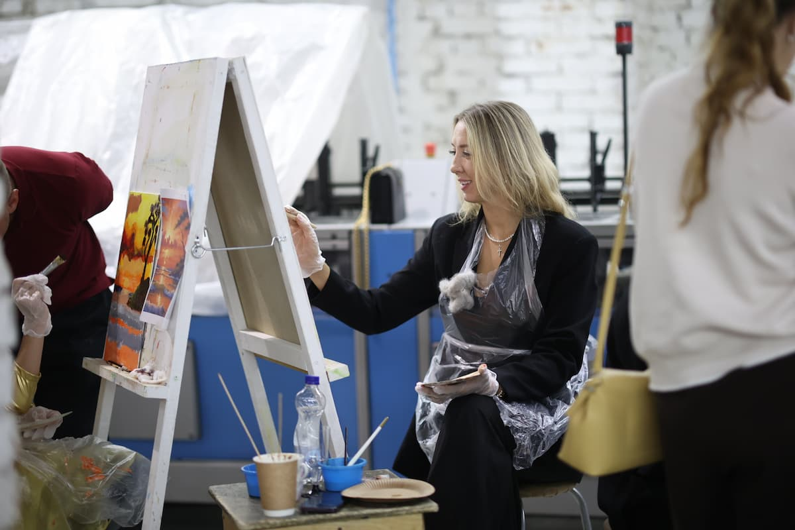
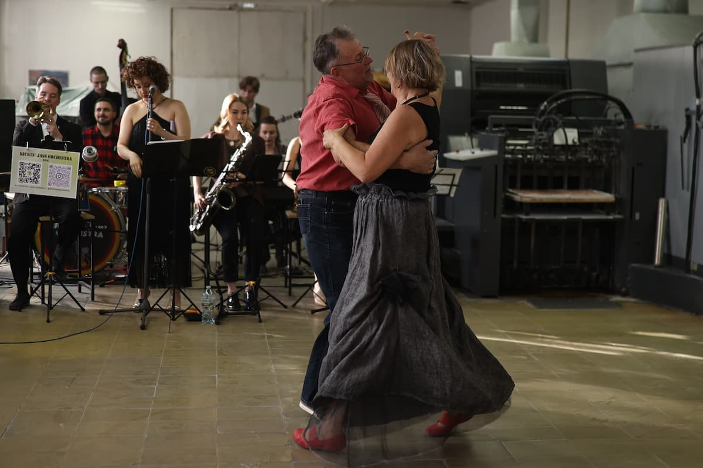
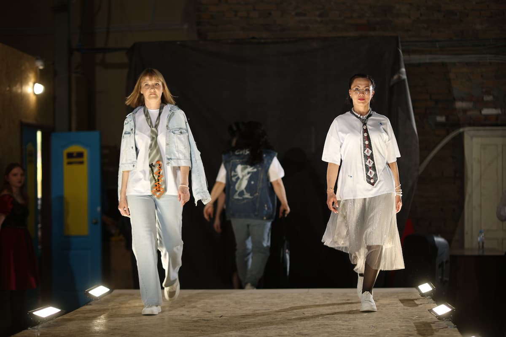
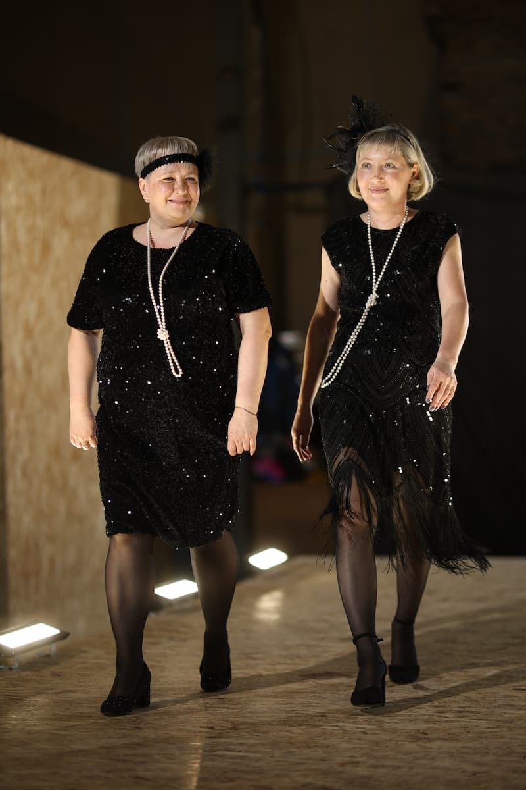
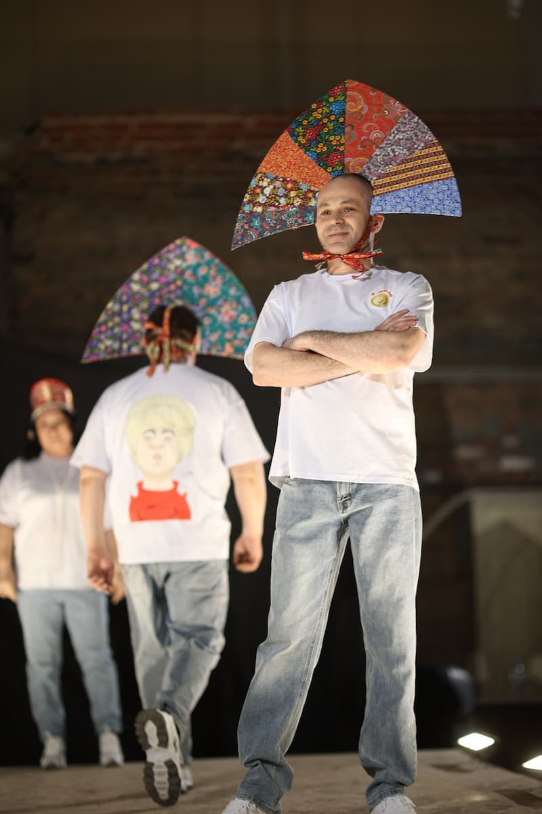

Арт-салон «Лазури»: как прошел наш день творчества и вдохновения

Дорогие друзья!
Это случилось! 30 апреля 2026 года типография «Лазурь» провела свой первый Арт-салон, приуроченный к нашему 29-летию. И мы счастливы сообщить: всё задуманное получилось в полной мере, а праздник действительно удался на славу.
Вчера наша производственная площадка на один день превратилась в место встречи искусства и печатного дела. Мы увидели, как по-настоящему раскрываются творческие люди, когда для них создана располагающая, теплая и вдохновляющая атмосфера.

Как всё прошло
Все элементы программы, от выставки картин до показа мод, сложились в единое, гармоничное событие. Гости смогли насладиться живой музыкой, поучаствовать в мастер-классах и просто приятно провести время за разговорами на фуршете. Сотрудники, партнеры и приглашенные творческие гости остались очень довольны — а это для нас самый главный показатель успеха.


Отдельная благодарность — художникам, дизайнерам и мастерам, которые откликнулись на наше приглашение и стали полноценными участниками и соавторами этого дня. Ваше творчество действительно украсило праздник и задало ему особый тон.

Нам 29 лет!
Этот Арт-салон стал для нас не просто днем рождения компании, а настоящей демонстрацией того, что печатное дело и чистое искусство могут не просто сосуществовать, но и усиливать друг друга. Нам 29, и мы полны энергии для новых проектов.


Мы готовим для вас подробный фотоотчет и видеоролик о том, как прошел этот день. Следите за новостями на нашем сайте и в социальных сетях — там будет гораздо больше ярких кадров и тёплых моментов. А пока делимся первыми фотографиями с прошедшего праздника.

Спасибо всем, кто был с нами в этот день! Оставайтесь с «Лазурью» — впереди ещё много интересного.